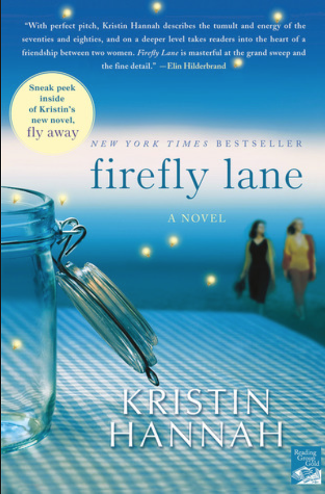
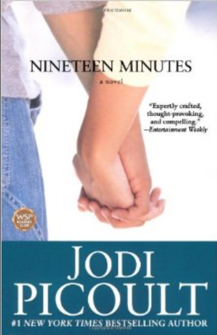

Firefly Lane
By: Kristin Hannah
My favorite book of all time is Firefly Lane by Kristin Hannah. It follows two best friends through their journey of growing up, growing apart, and once again finding each other and rekindling their strong bond. Their friendship started when Tully Hart comes to Kate Mularkey's rescue and pulls her up from the bottom of the 8th grade food chain. This book is one of my favorites because it mirrors my experience growing up on the same street as my best friend, growing apart, and finding our way back to each other.
Nineteen Minutes
By: Jodi Picoult
Another great read is written by Jodi Picoult titled Nineteen Minutes. This story follows a superior court judge named Alex, Josie, and Peter's parents. Each of these characters play an important role in finding out what happened the day of the school shooting. Alex is torn between presiding over the biggest case of her career and knowing that doing so will cause an even wider chasm in her relationship with her emotionally fragile daughter who was inside of the school on that terrible day. While Josie, Peter's best friend claims she can’t remember what happened in the last fatal minutes of Peter’s rampage. And Peter’s parents, Lacy and Lewis Houghton who ceaselessly examine the past to see what they might have said or done to compel their son to such extremes. This book is riveting and feels so real that you feel as though you have become a part of the story with every turn of the page.